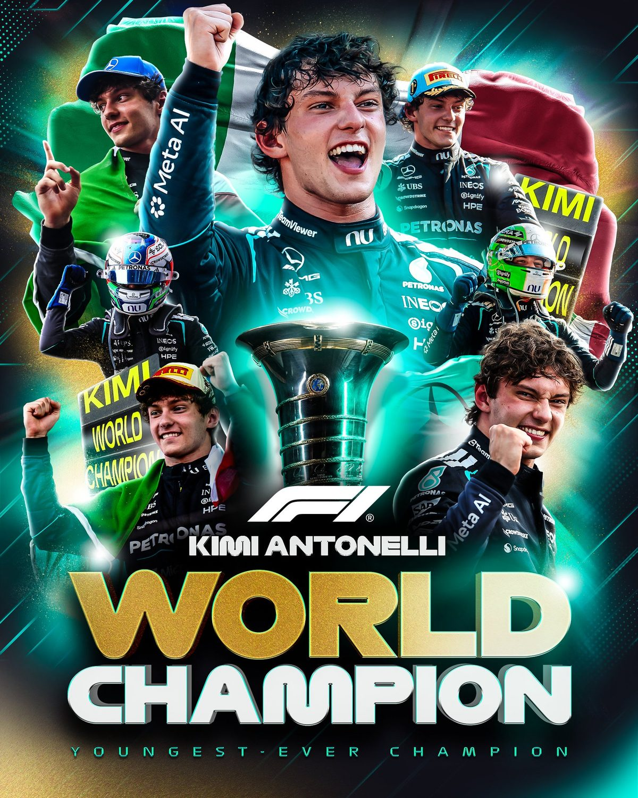

Sport
Kimi Antonelli är världsmästare i formel 1 – 20-åringen blir den yngste någonsin

Mercedes italienske förare Kimi Antonelli säkrade VM-titeln i formel 1 genom att bli trea i Mexico City Grand Prix natten till måndag. Han är 20 år och 68 dagar gammal och därmed den yngste världsmästaren i sportens historia, och den förste italienske mästaren sedan Alberto Ascari 1953. Max Verstappen vann loppet före Lewis Hamilton, men efter målgång handlade mycket om ett internt Ferrari-bråk i första kurvan.
Kimi Antonelli behövde inte vinna i Mexiko. En tredjeplats räckte gott för Mercedes 20-årige italienare, och när han korsade mållinjen på Autódromo Hermanos Rodríguez var VM-titeln klar. "Kimi Antonelli är världsmästare", meddelade Formel 1 i ett inlägg som setts miljontals gånger. Även Mercedes, Sky Sports F1 och ESPN F1 slog fast titeln direkt efter målgång.
Yngst genom tiderna
Antonelli är 20 år och 68 dagar gammal, och det gör honom till den yngste världsmästaren någonsin i formel 1. Han är dessutom den förste italienaren som vinner förar-VM sedan Alberto Ascari 1953, påpekar PaddockIntel. I Italien har den långa väntan varit ett återkommande samtalsämne. Den italienske F1-följaren Matteo är en av många som beskriver titeln som historisk. GPblog var en av de första sajterna att rapportera.
Bilden från podiet blev snabbt en av kvällens mest delade. Max Verstappen, som vann loppet, och tvåan Lewis Hamilton lyfte upp den nye mästaren på sina axlar, något som Formel 1 fångade på video. "12 F1-titlar på den här bilden", skrev Mercedes: Hamiltons sju, Verstappens fyra och Antonellis första.

Ferrari-bråk i första kurvan
Själva loppet blev en framgång för Verstappen, som vann före Hamilton, medan Antonelli blev trea och Charles Leclerc fyra. Hamilton startade från pole position, men redan på första varvet gick det snett för Ferrari. Både Leclerc och Hamilton gick brett i kurva 4. Leclerc skar kurvan, tog ledningen och fick senare fem sekunders tidsstraff. Hamiltons radiomeddelande under loppet uppmärksammades också brett.
Efter loppet var Ferraris stallchef Fred Vasseur ovanligt hård mot sina förare. Han kallade det som hände en brist på respekt mot alla i stallet som arbetar med bilarna, och sade att han hade svårt att svälja det: "De kör inte för sin egen skull." Det återges av bland andra RACER, Paddock Files och, på franska, SportsZone. Hur Ferrari tänker hantera saken internt är ännu inte känt.
Så vet vi det
Källmix: 14 källor – 5 primärkälla, 1 analys, 4 journalist, 3 etablerad media, 1 debattör. Etablerad media utgör 3 av 14.
- Primärkälla Formel 1: Kimi Antonelli är världsmästare
- Primärkälla Formel 1: den yngste världsmästaren någonsin
- Primärkälla Formel 1: Verstappen och Hamilton lyfter Antonelli på podiet
- Primärkälla Mercedes: Antonelli världsmästare
- Primärkälla Mercedes: "12 F1 titles in this picture"
- Etablerad media Sky Sports F1 om titeln
- Etablerad media ESPN F1 om titeln
- Journalist RACER om Vasseurs kritik av sina förare
- Journalist Paddock Files: Vasseurs citat på engelska
- Journalist SportsZone: Vasseurs citat på franska
- Journalist GPblog om titeln
- Etablerad media SPORTbible om Hamiltons radiomeddelande
- Analys PaddockIntel: förste italienske mästaren sedan Ascari 1953
- Debattör Matteo, italiensk F1-följare, om den historiska titeln
VM-titeln, åldersrekordet och resultatet bekräftas av Formel 1 och Mercedes egna konton samt av Sky Sports och ESPN. Att Antonelli är den förste italienske mästaren sedan Ascari 1953 skriver flera konton. Detaljerna kring Leclercs tidsstraff och Fred Vasseurs citat kommer från motorsportjournalister och nyhetskonton som återger honom; vi har inte sett hela intervjun.
Fördjupa
Frågorna öppnar Grok i en ny flik med artikeln som underlag. AI-svar kan innehålla fel, så kontrollera mot källorna.
- Vilka var de yngsta världsmästarna i formel 1 före Antonelli? ↗
- Vem var Alberto Ascari, och varför har Italien väntat så länge på en mästare? ↗
- Hur gick det till när Antonelli fick ta Lewis Hamiltons plats i Mercedes? ↗
- Vad säger reglerna om att skära en kurva och tjäna tid på det? ↗
- Varför blev det bråk inom Ferrari efter första varvet? ↗
- Hur avgörs resten av säsongen nu när förarmästerskapet är klart? ↗
Läs vidare
Uppdateringslogg
- 07:22 – Artikeln publicerad.